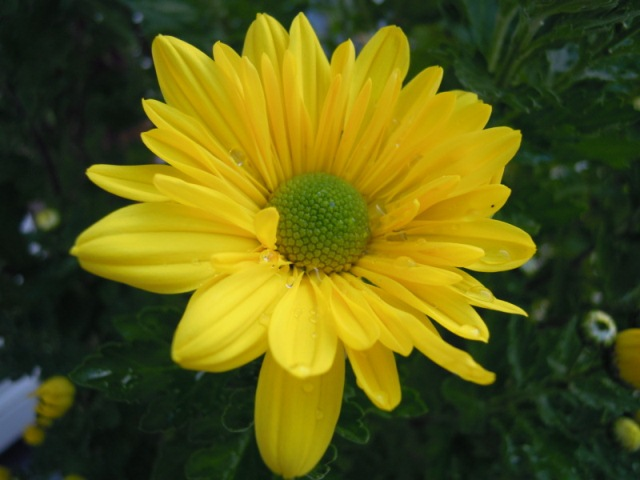

Hoa cúc

Họ Cúc (danh pháp khoa học: Asteraceae hay Compositae), còn gọi là họ Hướng dương, họ Cúc tây, là một họ thực vật có hoa hai lá mầm. Tên gọi khoa học của họ này có từ chi Aster (cúc tây) và có từ nguyên từ gốc tiếng Hy Lạp mang nghĩa ngôi sao-hình dáng của bông hoa trong các loài của nó, được điển hình hóa thành tên gọi phổ biến chung là hoa cúc.